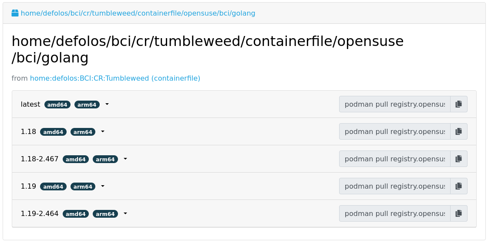

Dan Čermák
Dan Čermák
| Software Developer @SUSE | |
| i3 SIG, Package maintainer | |
| Developer Tools, Testing and Documentation, Home Automation | |
| https://dancermak.name | |
| dcermak | |
| @Defolos@mastodon.social |
Why use OBS?
kiwidocker / podmanzypper, dnf or aptDockerfile, pulling many binaries <repository name="standard">
<path project="openSUSE:Factory" repository="images"/>
<path project="openSUSE:Factory:ARM" repository="images"/>
<path project="openSUSE:Factory:ARM" repository="standard"/>
<path project="openSUSE:Factory:PowerPC" repository="standard"/>
<path project="openSUSE:Factory:zSystems" repository="standard"/>
<path project="openSUSE:Factory" repository="snapshot"/>
<arch>x86_64</arch>
<arch>aarch64</arch>
<arch>s390x</arch>
<arch>ppc64le</arch>
</repository>
<!-- snip -->
<repository name="containerfile">
<path project="$THIS_PROJECT" repository="images"/>
<path project="$THIS_PROJECT" repository="standard"/>
<arch>x86_64</arch>
<arch>aarch64</arch>
<arch>s390x</arch>
<arch>ppc64le</arch>
</repository>
</repository>
prjconf%if %_repository == "containerfile" Type: docker # optional: BuildEngine: podman %endif
DockerfileFROM opensuse/tumbleweed:latest
#!BuildTag: opensuse/git:latest
RUN zypper -n in git
CMD ["/usr/bin/git"]
Dockerfile peculiaritiesobs-docker-supportUSER must be rootDockerfile<image schemaversion="6.5" name="$name-image" xmlns:suse_label_helper="com.suse.label_helper">
<!-- snip -->
<preferences>
<type image="docker"
derived_from="obsrepositories:/suse/sle15#15.3">
<containerconfig
name="bci/ruby"
tag="2.5"
maintainer="SUSE LLC (https://www.suse.com/)"
additionaltags="2.5-%RELEASE%,2,2-%RELEASE%">
</containerconfig>
</type>
<version>15.3.0</version>
</preferences>
<!-- snip -->
</image>

registry.opensuse.org/ + ${prj_name/:/\/}.lower() + /$REPO/$BUILD_TAG
❯ osc build --clean images
# *snip*
/var/tmp/build-root/images-x86_64/usr/src/packages/KIWI/registry-image.x86_64-2023-Build.docker.tar
/var/tmp/build-root/images-x86_64/usr/src/packages/KIWI/registry-image.x86_64-2023-Build.docker.tar.sha256
❯ podman load -i /var/tmp/build-root/images-x86_64/usr/src/packages/KIWI/registry-image.x86_64-2023-Build.docker.tar
Getting image source signatures
# *snip*
Storing signatures
Loaded image: docker.io/opensuse/registry:2.8
Loaded image: docker.io/opensuse/registry:2.8-
Loaded image: docker.io/opensuse/registry:latest
❯ podman run --rm -it docker.io/opensuse/registry:2.8
Dockerfile for all architectures#!ExclusiveArch: x86_64 aarch64
#!ExcludeArch: s390x ppc64le
RUN [ $(uname -m) = "x86_64" ] && zypper -n in amd64-only-pkg
#!ArchExclusiveLine x86_64
RUN [ $(uname -m) = "x86_64" ] && zypper -n in amd64-only-pkg
#!ArchExcludedLine x86_64
RUN [ $(uname -m) = "x86_64" ] || zypper -n in non-amd64-pkg
docker build -t my/prefix:1.5 -t my/prefix:latest .
Dockerfile:
#!BuildTag: my/prefix:1.5
#!BuildTag: my/prefix:latest
kiwi xml:
<!-- OBS-AddTag: my/prefix:1.5 my/prefix:latest -->
dod project/repository (e.g. SUSE:Registry):<project name="home:$username:registry">
<!-- snip -->
<publish><disable/></publish>
<repository name="standard">
<download arch="x86_64"
url="https://registry.suse.com"
repotype="registry"/>
<arch>x86_64</arch>
</repository>
</project>
_meta:<project name="home:$username:containers">
<!-- snip -->
<repository name="standard">
<path project="home:$username:registry" repository="standard"/>
<!-- additional paths -->
<arch>x86_64</arch>
<arch>aarch64</arch>
</repository>
</project>
have choice for❯ osc buildinfo -d $prj $pkg containers x86_64|grep container
undecided about (direct):container:bci/openjdk:11: container:bci-openjdk-11@devel:BCI:SLE-15-SP4/containerfile container:bci_openjdk:11@SUSE:Registry/standard
⇒ Prefer: -container:bci_openjdk:11 or Prefer: -container:bci-openjdk-11
rebuild repository:
<project name=":Rebuild">
<!-- snip -->
<repository name="images">
<releasetarget project=":Release" repository="containers" trigger="manual"/>
<!-- ordinary paths here -->
<arch>x86_64</arch>
<arch>aarch64</arch>
</repository>
</project>
release repository:
<project name=":Release" kind="maintenance_release">
<!-- snip -->
<build><disable/></build>
<publish><enable/></publish>
<repository name="containers">
<path project="openSUSE:Tumbleweed" repository="standard"/>
<arch>x86_64</arch>
<arch>aarch64</arch>
</repository>
</project>
release:
osc release :Rebuild $image_name
ARG VERSION
ARG DEFAULT_USER=me
buildah bud --build-arg="VERSION=1.4.2" .
docker build --build-arg="VERSION=1.4.2" .
osc meta prjconf
BuildFlags: dockerarg:VERSION=1.4.2
RUN curl -f https://path/to/binary.tar.gz -o binary.tar.gz
replace with:
#!RemoteAssetUrl https://path/to/binary.tar.gz
COPY binary.tar.gz .
or
<!-- OBS-RemoteAsset: https://path/to/binary.tar.gz -->
replace_using_package_versiontag & set env vars from package versions
#!BuildTag: opensuse/389-ds:%%389ds_version%%
<services>
<service name="replace_using_package_version" mode="buildtime">
<param name="file">Dockerfile</param>
<param name="regex">%%389ds_version%%</param>
<param name="package">389-ds</param>
<param name="parse-version">minor</param>
</service>
</services>
metainfo_helper
source: kiwi_metainfo_helper
replaces %RELEASE%, %OS_VERSION%, etc. in kiwi.xml, Dockerfile & Chart.yaml
#!BuildTag: bci/bci-init:%OS_VERSION_ID_SP%
LABEL org.opencontainers.image.created="%BUILDTIME%"
LABEL org.opencontainers.image.source="%SOURCEURL%"
LABEL org.opensuse.reference="registry.suse.com/bci/bci-init:%OS_VERSION_ID_SP%.%RELEASE%"
LABEL org.openbuildservice.disturl="%DISTURL%"
replace_using_env%%VARNAME%% with $VARNAME from the build environmentenv)#!BuildTag: opensuse/virt-operator:%%PKG_VERSION%%-%%PKG_RELEASE%%
ENV KUBEVIRT_VERSION=%%PKG_VERSION%%
<services>
<service mode="buildtime" name="replace_using_env">
<param name="file">Dockerfile</param>
<param name="var">PKG_VERSION</param>
<param name="var">TAGPREFIX</param>
<param name="eval">/path/to/my/script/here</param>
</service>
</services>
_prjconf can be evaluated via rpm -E %macroorg.opencontainers.image.**
preserve LABEL them using kiwi_label_helper:
<labels>
<suse_label_helper:add_prefix prefix="org.opensuse.tiny">
<label name="org.opencontainers.image.title" value="openSUSE Leap Base Container"/>
</suse_label_helper:add_prefix>
</labels>
# labelprefix=org.opensuse.tiny
LABEL org.opencontainers.image.title=openSUSE Leap Base Container"
# endlabelprefix
expands to:
"Labels": {
"org.opencontainers.image.title": "openSUSE Leap Base Container",
"org.opensuse.tiny.title": "openSUSE Leap Base Container"
}
Answers!